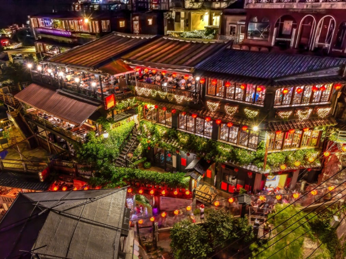

九份



細い路地の階段に沿って建つ古い館に、提灯が 灯るノスタルジックな風景。1989年、映画「非 情城市」の舞台になったことをきっかけに再び 注目を集めると共に、日本では、九份の町中に ある建物が2001年公開の映画「千と千尋の神隠 し」に登場する湯婆婆の湯屋を彷彿させるとし て話題に。日本統治時代に建てられた古い建物 が残ることから、どこか懐かしい雰囲気が漂う 町並みは日本人の琴線に触れ、今や台湾で行き たい観光地ナンバーワンとなりました。
おすすめ観光時間は幻想的な夕暮れが包らう
15:00～19:00